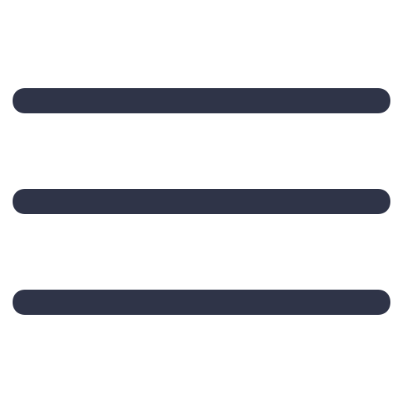

Hey, I'm Sachin
3rd Year B.Tech Student | MERN Stack Enthusiast | Problem Solver
Welcome to my digital workspace! I’m a passionate MERN stack developer who loves turning complex problems into clean, functional code. Whether it's building intuitive UIs, crafting RESTful APIs, or diving into debug sessions that stretch past midnight—I'm all in.
When I'm not coding, you'll find me exploring algorithms, fine-tuning logic, or breaking down bugs with surgical precision. I believe great software isn't just built—it's refined, tested, and thoughtfully crafted.
📩 Let’s Connect